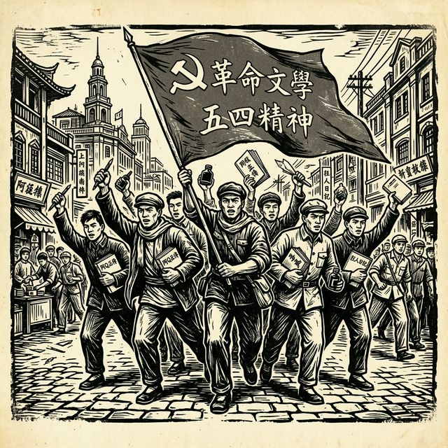

人物档案
150
可直接进入单人页面阅读
GITHUB PAGES 静态阅读版
这一版不依赖 Python 运行环境，直接把标准化 CSV 生成静态页面，适合在线阅读、引用、搜索与 GitHub Pages 发布。

可直接进入单人页面阅读
聚合为人物对关系卡片
保留时间、地点与参与者
仅展示可公开说明的来源信息
这一版重点解决“在线可读”而不是“完整交互分析”。页面以阅读和跳转为主，复杂网络图与地图筛选仍保留在 Streamlit 应用。
静态站会优先把高频关系、人际共现与史料证据组织成阅读友好的关系卡片。
人物入口
关系索引
交游 / 时空共现 / 通信
鲁迅日记 1929年6月1日；鲁迅日记 1929年5月20日
交游 / 交往 / 通信
鲁迅日记 1933年3月1日；鲁迅日记 1928年12月28日
通信
鲁迅日记 1936年7月9日；左联回忆录 第700页
交往 / 通信
鲁迅日记 1929年12月26日；鲁迅日记 1929年3月20日
时空共现 / 通信
鲁迅日记 1928年11月27日；鲁迅日记 1929年11月23日
时空共现 / 通信
鲁迅日记 1929年2月16日；鲁迅日记 1929年7月7日
时空共现 / 通信
鲁迅日记 1929年2月6日；鲁迅日记 1929年5月11日
时空共现 / 通信
鲁迅日记 1929年5月20日；鲁迅日记 1929年7月28日
事件时间线